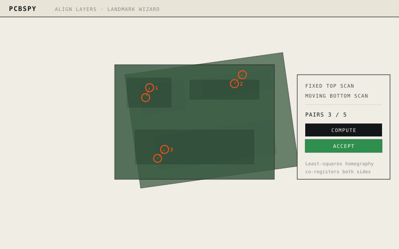

Layer alignment
Align top & bottom
Place matching landmark pairs across two scans and compute a homography that snaps both sides into the same world coordinates.
- Pick a fixed and a moving layer
- Place 5–8 feature pairs
- Least-squares co-registration
